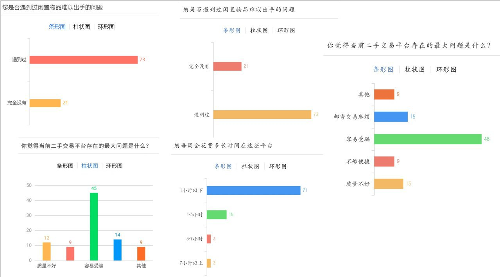
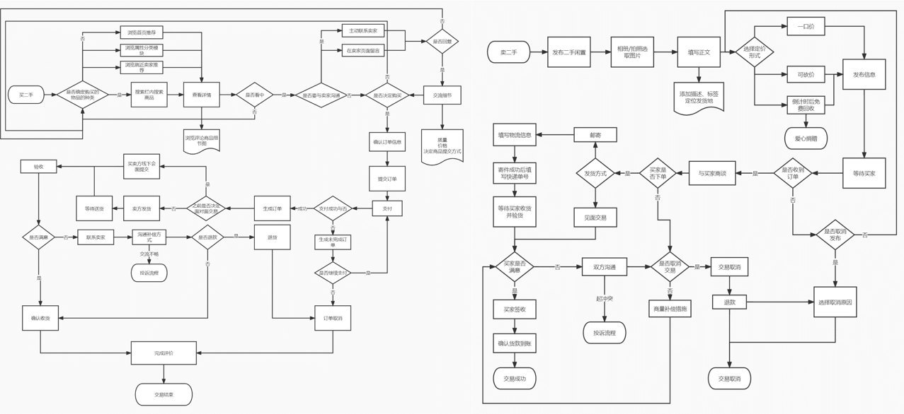
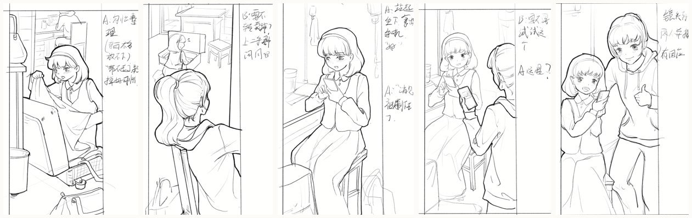
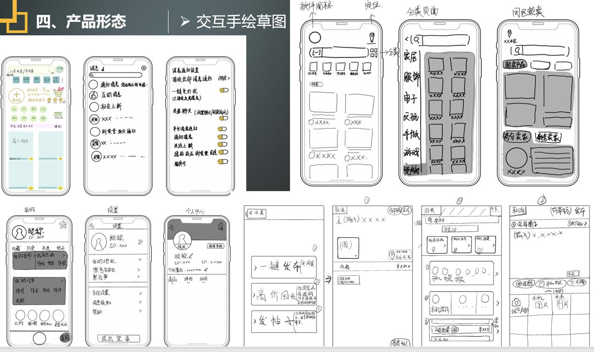
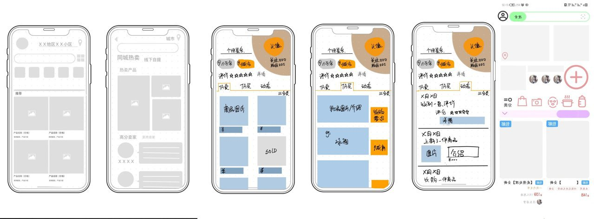
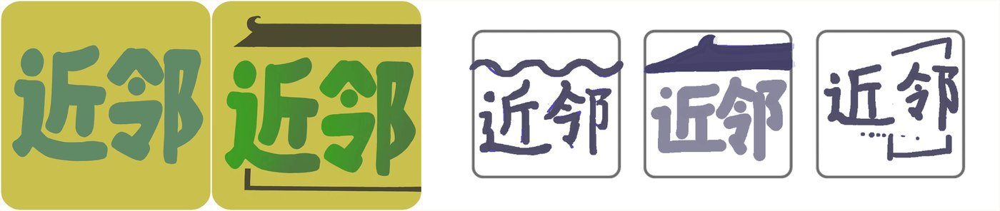
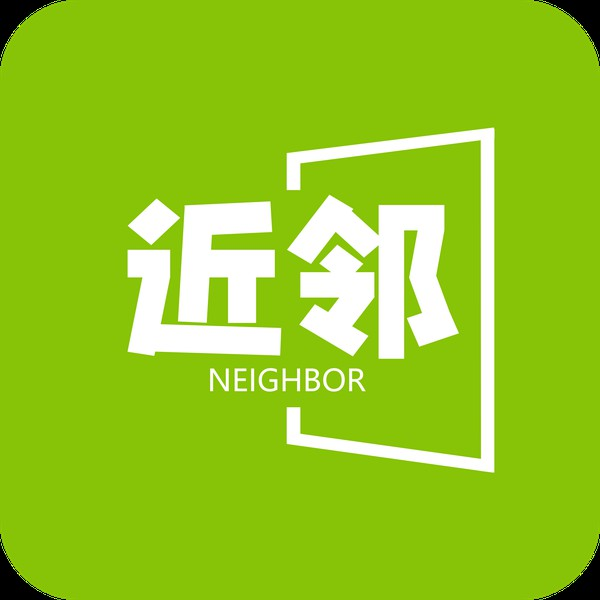
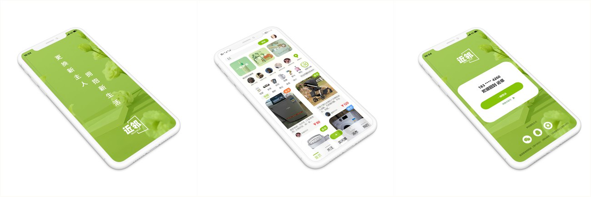
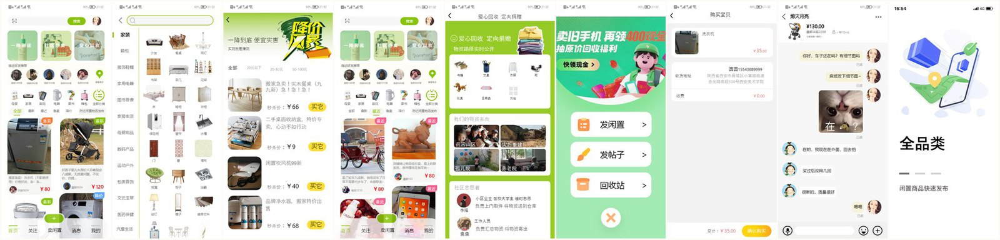
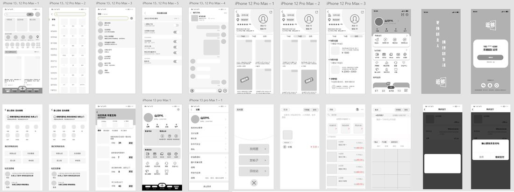

PROJECT 07
近邻
Community Mutual-Aid App Design
项目角色：用户调研 · 功能框架与交互流程 · 视觉系统 · 高保真界面 —— 把小区里闲置的、够不着的、临时缺的东西和服务，交回给邻居。
项目角色：用户调研 · 功能框架与交互流程 · 视觉系统 · 高保真界面 —— 把小区里闲置的、够不着的、临时缺的东西和服务，交回给邻居。
「近邻」是一个社区互助 App：把小区里闲置的、够不着的、临时缺的东西和服务，交回给邻居。 比起跨城的二手平台，它做的是小范围、面对面、抬头不见低头见的交易与求助。
设计从行业分析与用户调研开始——问卷加深度访谈，最后收敛出三类核心诉求： 闲置流转、临时求助、邻里信任。后面的功能与界面都围绕这三件事展开。

把三类诉求翻译成功能：发布、浏览、沟通、成交的闭环要短，求助与回收要能被邻居就近看见。 流程图把「发布 → 沟通 → 线下交易」这条主线拆到每一步状态，也是后面画界面的依据。


界面先在纸面上推：每个关键页面画出手绘稿与产品形态的关系，再收敛成带标注的线框板—— 信息层级、按钮位置与操作路径在这一步定下来，后面才进视觉。


标志直接凸显主题文字，「近邻」二字取自「远亲不如近邻，近邻不抵对门」； 半包围方框像打开的一扇门，给平面图形赋予透视感。主体色取代表自然环保的绿色， 白色文字简洁明了——这抹绿也贯穿到整套界面与样机里。



高保真界面覆盖首页、分类、商品详情、发布、消息与个人中心等核心路径， 全部沿用同一套视觉规范；下面是九块核心屏与整套界面的铺底总览。


「近邻」是我第一次把用户调研一路做到高保真界面的项目：三类诉求不是拍脑袋定的， 是从问卷与深访里收敛出来的，后面的每一屏都能对应回那三条。 这套「先问清楚再画」的习惯后来一直用着——包括毕设里把妆造考据做成知识库的逻辑。
返回作品集首页